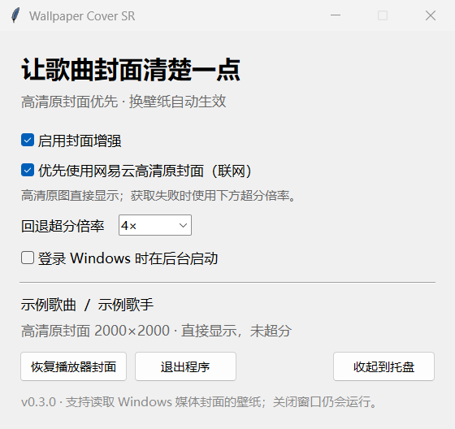

原图，保留真实细节
核对歌曲与封面后，直接使用官方高清原图。字母、线条与人物细节，来自真实画面。

实际界面截图 · 歌曲信息为示例
核对歌曲与封面后，直接使用官方高清原图。字母、线条与人物细节，来自真实画面。
通过 Windows 标准媒体接口传递封面。同类场景壁纸无需重新适配，保留原有显示效果。
高清原图无需 AI 推理。只有需要回退超分时才短暂处理，完成后释放 GPU 资源。
无需安装 Python、CUDA，也无需登录网易云账号。
在 Releases 的 Assets 中选择 WallpaperCoverSR-0.3.0-windows-x64.zip。普通用户无需下载源码包。
保留程序、_internal、vendor 和 licenses 等所有文件。请勿只复制 exe 或在压缩包内运行。
Windows 10 / 11 x64 即可使用。超分回退另需支持 Vulkan 的显卡驱动。
原壁纸应当已经能够识别当前歌曲和封面。
打开网易云和 Wallpaper Engine，应用一张读取 Windows 媒体封面的场景壁纸。
勾选“启用封面增强”和“优先使用网易云高清原封面（联网）”。
状态出现这句话，说明已经使用高清原封面。较大图片会缩到最长边 1024 像素。
需要自动启动？ 勾选“登录 Windows 时在后台启动”；Wallpaper Engine 自启动在其自身设置中开启。
关闭窗口后仍在运行。 双击托盘或再次打开程序可回到设置；从界面或托盘选择“退出”才能停止。
没有高清原图时怎么办？ 自动使用 2× / 3× / 4× 超分作为回退。取消高清选项后即可使用离线路径。
这是便携程序，无需运行卸载器。
在设置中取消“登录 Windows 时在后台启动”。
选择“退出”，让壁纸恢复读取真实播放器。
删除完整的 WallpaperCoverSR 目录，即可移除程序。
按 Win + R，粘贴下方路径，打开后删除该数据文件夹。
%LOCALAPPDATA%\WallpaperCoverSR程序不会修改创意工坊壁纸文件。无需重新安装网易云或 Wallpaper Engine。
适用于读取 Windows 当前媒体封面的场景壁纸。已实测创意工坊 3571726810、3395777145。直接从网站抓图、自带播放器或固定封面的作品不经过同一接口；网页壁纸尚未完成实机验证。如果壁纸固定只读网易云，请改为自动来源或允许 WallpaperCoverSR。
无需账号、密码或 cookie。高清模式只读网易云本地播放队列，向官方图片 CDN 请求对应封面；不向搜索服务发送歌名，不上传缩略图或遥测。关闭高清选项后使用离线超分。
可能是网络不可用、本地队列格式变化、曲目不在队列，或同名版本与封面核对不够可靠。程序会回退处理系统缩略图。高清取图已在网易云 Windows 3.1.41.205529 验证，其他版本与商店版不保证使用相同格式。
高清原图直接显示，不经过 AI 重建。2× / 3× / 4× 只用于获取不到高清图时的回退超分。最长边超过 1024 像素的原图会缩小后发布，减少传输与内存占用。
从托盘退出旧版，下载并完整解压新版到原位置，再次运行。设置与缓存保存在用户数据目录。如果更换程序目录，请先在旧版取消开机启动，再在新版重新开启。
高清模式无需 AI 推理，缓存命中无需联网。0.3 在本机短样本工作集约 91 MiB，具体占用随环境变化。完整测试条件、媒体会话行为与兼容边界见 验证说明。
开源、便携，为你的音乐桌面补上清晰的一笔。